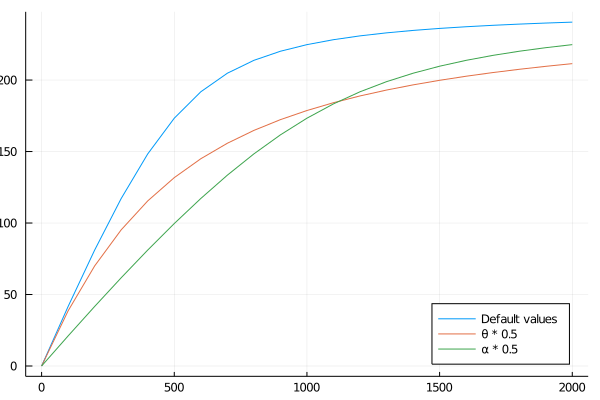

Photosynthesis
List all models available for photosynthesis, how to use them, what are the parameters...
Parameter effects
J~PPFD
First we import the packages needed:
using Plots;
using PlantBiophysicsThen we set up our models and their parameter values:
A = Fvcb(); PPFD = 0:100:2000;0:100:2000
And finally we plot J ~ PPFD with different parameter values, with the simplification that JMax is equal to JMaxRef:
plot(x -> PlantBiophysics.get_J(x, A.JMaxRef, A.α, A.θ), PPFD, xlabel = "PPFD (μmol m⁻² s⁻¹)",
ylab = "J (μmol m⁻² s⁻¹)", label = "Default values", legend = :bottomright);
plot!(x -> PlantBiophysics.get_J(x, A.JMaxRef, A.α, A.θ * 0.5), PPFD, label = "θ * 0.5");
plot!(x -> PlantBiophysics.get_J(x, A.JMaxRef, A.α * 0.5, A.θ), PPFD, label = "α * 0.5");/home/runner/.julia/packages/GR/G9I5v/src/../deps/gr/bin/gksqt: error while loading shared libraries: libQt5Widgets.so.5: cannot open shared object file: No such file or directory connect: Connection refused GKS: can't connect to GKS socket application GKS: Open failed in routine OPEN_WS GKS: GKS not in proper state. GKS must be either in the state WSOP or WSAC in routine ACTIVATE_WS
